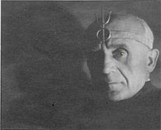

Грегор A. Грегориус или Ойген Гроше

Ойген Гроше (нем. Eugen Grosche), также известный под оккультным именем Gregor A. Gregorius, — немецкий оккультист, мистик и основатель тайного общества под названием Fraternitas Saturni (Братство Сатурна).
Краткая биография
- Родился - 11 марта 1888, Германия Лейпциг
- Настоящее имя: Ойген Гроше
- Псевдоним: Грегор А. Грегориус
- Умер - 5 января 1964, Германия Лейпциг
Деятельность
- В 1920-х годах активно участвовал в эзотерических кругах Веймарской Германии.
- В 1926 году основал Fraternitas Saturni (Братство Сатурна) — одно из самых влиятельных германских оккультных обществ, которое ориентировалось на астрологию, сатурнианские мистерии, телемизм (учение Алистера Кроули), и магические практики.
- Был автором множества оккультных текстов, публикаций, ритуалов и учений, включая темы астральной магии, алхимии, сексуальной магии и астрологии работы: Magische Briefe 1926-1927 переиздан Richard Schikowski 1980, Saturn-Gnosis 1928-1933, Die magische Erweckung der Chakra 1954 перепечатка Esoterischer Verlag 2005, Exorial 1960.
- Его псевдоним Gregor A. Gregorius стал символом авторитета в этих кругах.
Братство Сатурна
Общество активно отличалось от ордена Кроули (O.T.O.), делая акцент на Сатурне как символе ограничения, трансформации и кармы.
Организация действовала в полулегальном или закрытом режиме, особенно в период нацизма, когда оккультные движения были запрещены.
Интересные факты
- Gregor A. Gregorius подчеркивал индивидуальную трансформацию через магическое самопознание и считал, что каждый маг должен стать
- “властелином своей судьбы” через дисциплину и астральную работу.